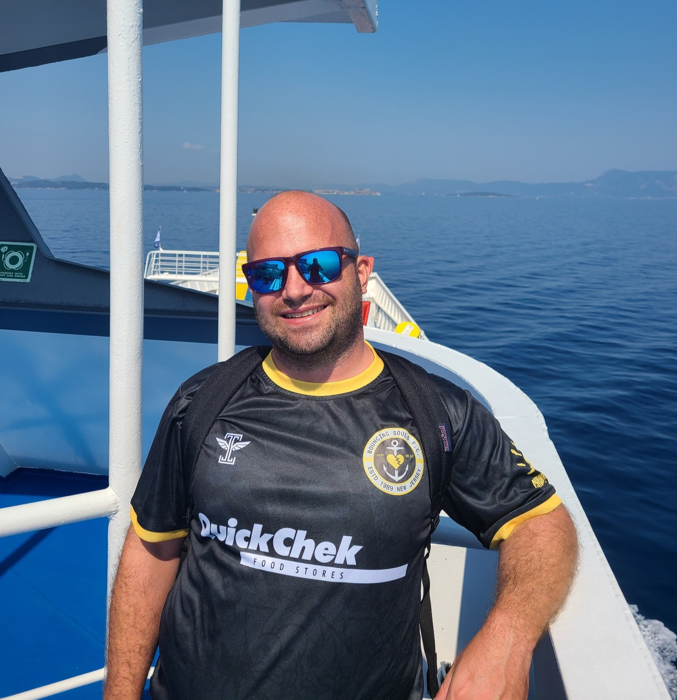
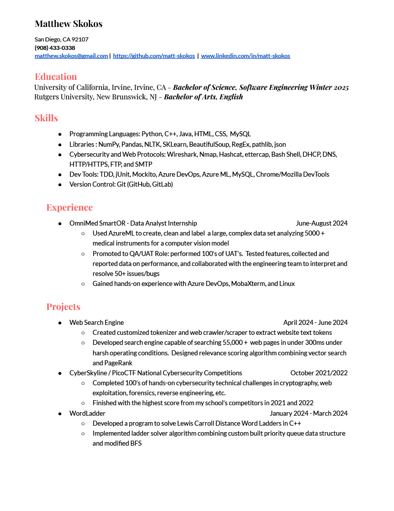
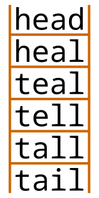
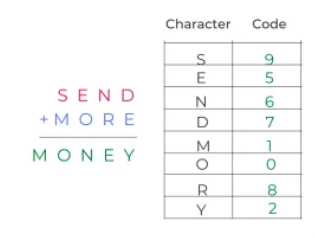

Hi welcome to my web page! My name is Matt and I'm currently pursuing a second bachelor's degree in Software Engineering at UC Irvine. I'm originally from New Jersey where I acquired my first degree from Rutgers in English. I'm interested in anything to do with Python, cybersecurity and C++. Aside from coding I like anything to do with music and the ocean, especially playing guitar and surfing! Reach out to me using my contact form or my socials at the bottom of the page.



This project was built using C++ and a clever alteration of Breadth First Search (BFS) algorithm to solve the LCD between two words. For instance you can input head to tail and it will trace the progression from word to word, changing 1 letter at a time, until it moves from head to tail.

Cryptarithms are puzzles that exchange the letters in a word for different numbers. There are several rules to maintain order such as: each letter must be represented by 1 and only 1 number, the numbers can only range from 0 to 9 and there must be either a solution or the admission that it was an impossible puzzle. This program works recursively to try each combination of letters ( in a brute force method, with slight pruning ) that might combine to create a solution.
This project is for my senior capstone. We're building a web app, using Firebase, Flutter, Algolia and a custom web scraping utility. Find out more about the project here: Eatery